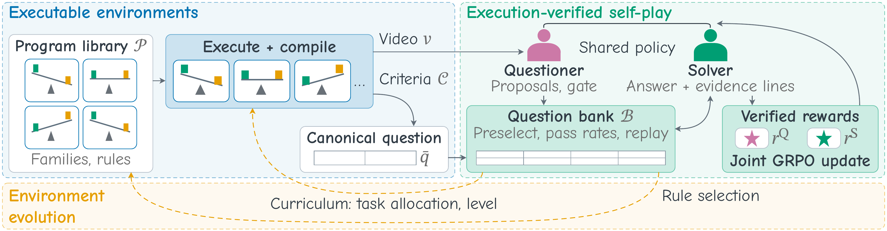

01Program videos
Every training video below comes from executing one program of the library. The trace that renders the frames also records the events, so the question, its ground-truth option and the interval of the deciding event come with the video. Play a clip: the gold bands are execution intervals, and the ground-truth option lights up once the deciding event has passed.
02Method
Tempo-Zero closes a loop of executable environments, execution-verified self-play and environment evolution. A single vision-language policy plays both roles, and every label it learns from comes from program execution.
Executable environments
A program with difficulty level, rule configuration and instance parameters executes into a trace. The trace compiles into the video, the verification criteria and a canonical question. Labels are recomputed on the sampled frames, and criteria whose answer survives a reversed or permuted trace are screened out as static.
Execution-verified self-play
As the Questioner, the policy writes new questions about verified criteria. A programmatic gate checks format, option validity, task scope and answer leakage. As the Solver, it answers with timestamped evidence lines, which are scored against the execution intervals. No judge model and no majority voting enter the loop.
RS = rans + mean(revid, rgrd)
RQ = g(q) · mean(rlearn, rnov)
Environment evolution
After each round, decayed pass rates from the question bank reallocate instances across (family, task) pairs and raise or lower their difficulty levels. The policy then reads each family's statistics and selects a rule change from a menu. The executor re-executes the program to validate the change before deployment, and a fixed playback schedule lengthens the videos across rounds.
ωf,a = κ/nf + (1 − κ) · wf,a / Σa′ wf,a′

03Main results
Training uses five rounds of LoRA self-play on rendered program videos only. The final checkpoint is evaluated zero-shot on twelve real-world benchmarks. Bold marks the best result per column within each backbone, underline marks the second best at 4B and 8B, and the small numbers give the change over the base model.
Temporal grounding (%, Avg. averages the mIoU of the first three benchmarks and GQA@0.3)
| Backbone | Method | ANet-RTL | ActivityNet Captions | Charades-STA | NExT-GQA | |||||||||||
|---|---|---|---|---|---|---|---|---|---|---|---|---|---|---|---|---|
| mIoU | R@0.3 | R@0.5 | R@0.7 | mIoU | R@0.3 | R@0.5 | R@0.7 | mIoU | R@0.3 | R@0.5 | R@0.7 | GQA@0.3 | GQA@0.5 | Avg. | ||
| Qwen3-VL-4B | Base model | 16.86 | 22.70 | 15.72 | 8.73 | 22.86 | 30.94 | 19.04 | 11.29 | 37.52 | 58.90 | 36.12 | 16.23 | 23.09 | 15.40 | 25.08 |
| VisPlay | 16.58 | 23.14 | 13.97 | 8.73 | 22.89 | 30.98 | 19.12 | 11.31 | 37.59 | 58.82 | 36.59 | 16.42 | 23.14 | 15.33 | 25.05 | |
| V-Zero | 15.85 | 20.96 | 13.97 | 8.30 | 22.81 | 30.91 | 18.92 | 11.31 | 37.10 | 58.33 | 35.24 | 15.62 | 22.82 | 15.22 | 24.64 | |
| Video-Zero | 29.75 | 44.98 | 28.82 | 13.54 | 32.12 | 44.76 | 27.67 | 16.24 | 41.85 | 65.11 | 40.81 | 20.03 | 38.29 | 23.00 | 35.50 | |
| Tempo-Zero | 31.34+14.48 | 48.03+25.33 | 31.00+15.28 | 13.10+4.37 | 34.98+12.12 | 49.35+18.41 | 31.04+12.00 | 17.26+5.97 | 42.53+5.01 | 66.29+7.39 | 41.26+5.14 | 19.49+3.26 | 39.17+16.08 | 24.50+9.10 | 37.00+11.92 | |
| Qwen3-VL-8B | Base model | 21.95 | 30.57 | 21.83 | 10.04 | 26.56 | 36.59 | 22.63 | 12.85 | 36.70 | 59.11 | 33.87 | 13.49 | 35.93 | 21.83 | 30.28 |
| VisPlay | 21.83 | 32.31 | 20.09 | 10.04 | 26.74 | 36.94 | 22.99 | 12.93 | 36.65 | 59.03 | 33.92 | 13.47 | 35.87 | 22.19 | 30.27 | |
| V-Zero | 22.77 | 32.31 | 20.52 | 9.17 | 26.69 | 36.79 | 23.05 | 13.00 | 36.43 | 58.63 | 33.66 | 13.41 | 35.73 | 22.11 | 30.40 | |
| Video-Zero | 26.19 | 39.30 | 24.45 | 12.23 | 29.87 | 41.77 | 26.23 | 14.66 | 37.34 | 60.16 | 35.54 | 13.58 | 39.60 | 24.26 | 33.25 | |
| Tempo-Zero | 31.22+9.27 | 46.72+16.15 | 28.38+6.55 | 13.54+3.50 | 34.16+7.60 | 49.20+12.61 | 30.86+8.23 | 16.26+3.41 | 46.10+9.40 | 72.26+13.15 | 49.81+15.94 | 23.06+9.57 | 40.39+4.46 | 25.14+3.31 | 37.97+7.69 | |
| Qwen3-VL-30B-A3B | Base model | 23.45 | 32.75 | 23.14 | 13.10 | 27.90 | 37.65 | 23.98 | 14.39 | 47.34 | 68.44 | 51.61 | 30.13 | 38.83 | 23.63 | 34.38 |
| Tempo-Zero | 34.23+10.78 | 49.78+17.03 | 33.62+10.48 | 17.90+4.80 | 36.35+8.45 | 52.42+14.77 | 32.95+8.97 | 17.38+2.99 | 48.77+1.43 | 77.15+8.71 | 52.96+1.35 | 22.37−7.76 | 45.15+6.32 | 27.88+4.25 | 41.12+6.74 | |
| Gemma 4 E4B | Base model | 23.97 | 34.93 | 22.27 | 10.04 | 18.64 | 24.93 | 14.65 | 7.05 | 19.08 | 27.39 | 13.04 | 6.05 | 21.72 | 10.99 | 20.85 |
| Tempo-Zero | 30.52+6.55 | 41.48+6.55 | 27.51+5.24 | 15.72+5.68 | 33.53+14.89 | 47.52+22.59 | 29.94+15.29 | 15.99+8.94 | 32.01+12.93 | 50.97+23.58 | 24.30+11.26 | 9.52+3.47 | 26.40+4.68 | 14.64+3.65 | 30.61+9.76 | |
Tempo-Zero improves every grounding metric over the base model at 4B and 8B and gives the best result in 26 of their 28 metrics. Training never sees a real-world interval annotation, so these gains come from localization learned on rendered videos.
Long-video understanding and video reasoning (official accuracy, %)
| Backbone | Method | Long-video understanding | Video reasoning | |||||||
|---|---|---|---|---|---|---|---|---|---|---|
| LongVideoBench | MLVU | Video-MME-Long | LSDBench | LongVideoReason | MMVU | VideoMathQA | VideoMMMU | Avg. | ||
| Qwen3-VL-4B | Base model | 57.70 | 62.60 | 51.60 | 54.68 | 69.90 | 64.32 | 19.05 | 57.56 | 54.68 |
| VisPlay | 59.20 | 63.50 | 53.20 | 54.83 | 69.60 | 63.36 | 18.33 | 57.44 | 54.93 | |
| V-Zero | 59.50 | 63.50 | 51.90 | 54.68 | 68.20 | 64.48 | 20.95 | 58.33 | 55.19 | |
| Video-Zero | 59.10 | 63.40 | 53.60 | 56.52 | 70.30 | 64.96 | 21.67 | 61.56 | 56.39 | |
| Tempo-Zero | 61.00+3.30 | 67.36+4.76 | 53.30+1.70 | 56.06+1.38 | 72.40+2.50 | 66.08+1.76 | 22.38+3.33 | 63.11+5.55 | 57.71+3.03 | |
| Qwen3-VL-8B | Base model | 59.80 | 64.40 | 55.70 | 57.59 | 68.60 | 68.32 | 23.81 | 63.78 | 57.75 |
| VisPlay | 60.50 | 64.90 | 54.90 | 57.44 | 68.10 | 67.04 | 21.43 | 62.67 | 57.12 | |
| V-Zero | 60.10 | 64.20 | 56.00 | 56.90 | 69.20 | 68.80 | 22.14 | 63.22 | 57.57 | |
| Video-Zero | 60.40 | 64.60 | 56.60 | 56.75 | 70.70 | 68.00 | 25.48 | 64.22 | 58.34 | |
| Tempo-Zero | 61.00+1.20 | 68.51+4.11 | 56.90+1.20 | 58.59+1.00 | 73.00+4.40 | 68.48+0.16 | 27.38+3.57 | 64.44+0.66 | 59.79+2.04 | |
| Qwen3-VL-30B-A3B | Base model | 65.37 | 70.26 | 58.33 | 62.50 | 71.40 | 72.16 | 26.90 | 65.11 | 61.50 |
| Tempo-Zero | 66.70+1.33 | 71.34+1.08 | 60.56+2.23 | 63.96+1.46 | 75.60+4.20 | 73.60+1.44 | 31.90+5.00 | 67.44+2.33 | 63.89+2.39 | |
| Gemma 4 E4B | Base model | 50.71 | 54.51 | 46.44 | 47.09 | 70.60 | 65.28 | 30.00 | 65.89 | 53.81 |
| Tempo-Zero | 53.40+2.69 | 54.62+0.11 | 48.00+1.56 | 55.14+8.05 | 71.10+0.50 | 67.04+1.76 | 29.29−0.71 | 66.11+0.22 | 55.59+1.78 | |
The gains extend beyond grounding: Tempo-Zero improves all eight benchmarks on every Qwen3-VL backbone and gives the best result in 13 of the 16 metrics at 4B and 8B.
04BibTeX
@misc{zhu2026tempozero,
title = {Tempo-Zero: Recursive Self-Play in Executable Worlds for Video Reasoning},
author = {Zhu, Jingmin},
year = {2026}
}